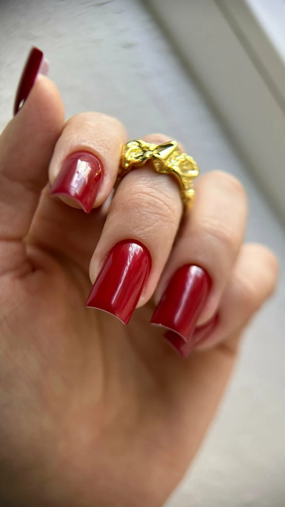
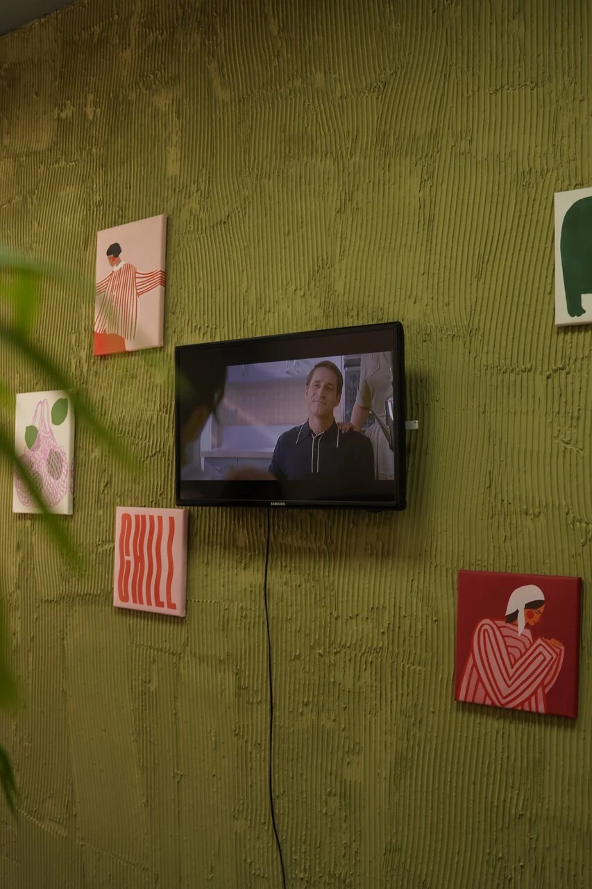

КРАСНОДАР / ПРОЕЗД РЕПИНА, 3/1
Маникюр,
в котором
видно вас.
Нюд, яркий цвет или тонкие детали.
Маникюр, педикюр и наращивание в Napilim Nails.
Откроется действующая онлайн-запись студии.
5,0★★★★★89 отзывов на Яндекс.Картах ↗
YOUR LITTLE STATEMENT.
Остальное обсудим при записи.↓
01 / ВАШ СЛЕДУЮЩИЙ ДИЗАЙН
Есть настроение.
Есть оттенок.
Фотографии из карточки студии.
Выбирайте идею и обсудите её с мастером.
Источник: галерея Napilim Nails на Яндекс.Картах. Авторы: Анастасия Вакуленко и Рина, 2024-2026. Актуальность дизайнов и возможность повторения уточните при записи.
02 / ВРЕМЯ ДЛЯ СЕБЯ
Выберите свой
маленький ритуал.
Услуги и начальные цены
из действующей онлайн-записи.
Сверено с онлайн-записью Яндекс / DIKIDI 16.11.2026. Обычная витрина карточки давно не обновлялась. Цены «от» зависят от выбранной услуги и специалиста; итоговую стоимость и состав уточните до процедуры.
Перейти к онлайн-записи ↗
03 / НЕ ТОЛЬКО ПРО НОГТИ
Место для
паузы.
Выберите форму, оттенок и время для себя. Работы, палитра и запись - всё перед вами.
Маникюр, педикюр и наращивание -
в одной студии на проезде Репина.
Выбор услуги и специалиста -
в действующей онлайн-записи.
04 / СЛОВА ГОСТЕЙ
Детали замечают.
И возвращаются к ним.
«Быстрая, аккуратная, профессиональная работа мастера Анастасии.»
«Атмосфера приятная, располагает к отдыху.»
Фрагменты публичных отзывов. Год для этих дат площадка не показывает. Полные тексты доступны по ссылке выше.
05 / ДО ВСТРЕЧИ В СТУДИИ
Найдётся цвет.
Выберите время.
Записаться онлайн ↗Выбор услуги, мастера и свободного времени.
Napilim Nails
Краснодар, проезд Репина, 3, корп. 1
Подъезд 1, этаж 1, кабинет 111